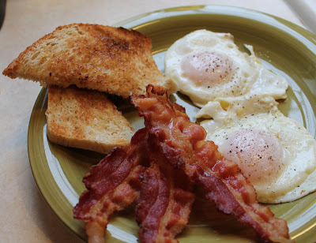

<-- Return to recipes
Bacon and Eggs Breakfast

Description
Bacon and Eggs is a popular and most loves Continental breakfast that is extremely fulfilling and delicious. Bacon and eggs is a simple, easy and wholesome meal that is perfect for a fulfilling meal and one of the best Keto breakfast. Bacon and eggs is a recipe that is really easy to prepare. as we all know that bacon and eggs go very well with each other and it is a protein-rich breakfast recipe. If you don't feel like preparing an elaborate meal, this is what you ca prepare in just a little time. Follow the simple recipe steps and enjoy this meal with your loved ones.
Ingredients
- 2 eggs
- 3 slices of bacon
- 2 slices of toast
- 1 tomato
- salt and pepper to taste
- vegeta all-purpose seasoning
- butter
Steps
- Fry bacon in non-stick on low-medium heat, flipping often. Done cooking when small white bubbles start to form, leave in longer if you like your bacon crispier.
- While bacon cooks, cut up tomato and season with salt and pepper to taste.
- Start toasting toast.
- Cook eggs in same pan as bacon. Cook to your liking, over-easy or sunny side up. For sunny side up cover pan to cook egg whites thoroughly. Season with Vegeta all-purpose seasoning.
- (Optional) Butter toast.